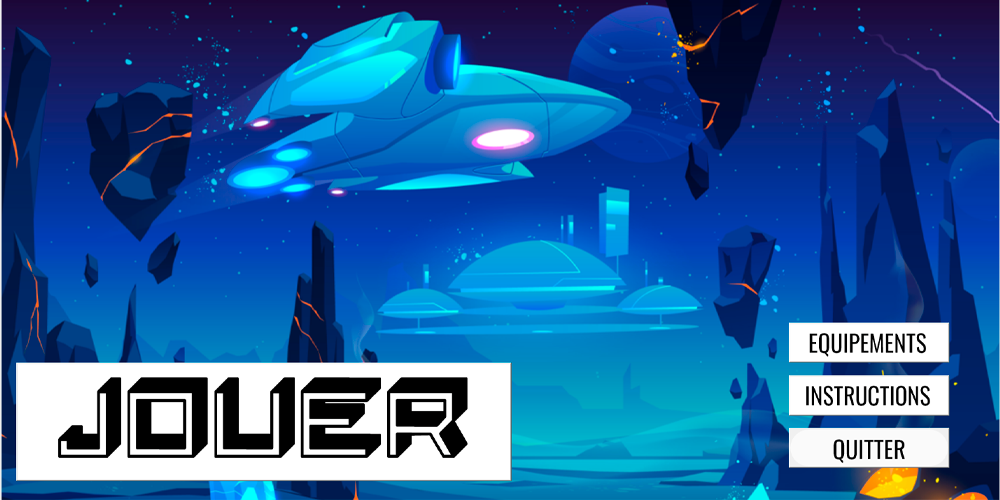

Il y a bien longtemps dans une galaxie lointaine ...
Depuis la sortie du premier jeu vidéo sur ordinateur en 1962, des millions de jeux ont vu leur sortie sur différentes plateformes. Du traditionnel ordinateur aux différentes consoles qui existent de nos jours, la vente et la production de jeux à connu une ascension fulgurante. Que ce soit de la qualité des graphismes sur les écrans ou de la réalité virtuelle à travers les différents casques de VR, l’évolution des possibilités de jeu est très vaste. Mais n’oublions pas pour autant leurs origines ! Ces traditionnels jeux rétro ont forgé l’histoire de nos jeux actuels, et n’en sont pas moins des légendes. C’est ainsi que pour mes études, un de mes projet fut de créer un jeu vidéo, à l’aspect rétro ! De son idéalisation à sa conception, je vous dévoilerai les étapes de la construction de mon premier jeu : « Un Space Invader Like »

RétroGaming
Paru en 1978, Space Invaders est le premier Shoot’em Up. Un concept simple : un vaisseau tire sur des aliens pour marquer des points. Ce titre rentrera dans la légende aux côtés de l’historique Super Mario ou de l’adorable PacMan, et deviendra un réel mythe, notamment au Japon ou ce jeu deviendra un phénomène de société et entrainera la mise en place de plus de 350 000 bornes d’arcades dans le pays en 1982. C’est donc dans un style rétro et inspiré par la fin des années 1970 que je choisis de créer mon premier jeu de type arcade. Le principe étant le même qu’à l’initial, un vaisseau pouvant se déplacer de gauche à droite et qui peut tirer droit devant lui, doit détruire des astéroïdes afin de marquer des points et les empêcher de toucher le vaisseau ou le bas de l’écran. Pour la création de ce jeu, nous avons choisi le langage Python. Un langage aussi pratique que simple à utiliser lorsque nous débutons dans le monde du codage. Grâce à la librairie graphique Tkinter, le jeu a pu avoir un style graphique rétro comme nous le voulions et sa réalisation était des plus amusantes et satisfaisantes à jouer. Le jeu de base étant fini, de nombreuses modifications et améliorations sont en cours. La possibilité de changer de vaisseau, de style de tir ou d’obtenir des bonus sur certains astéroïdes détruits est en cours de développement. Le jeu sortira peut-être sur PC et le code est disponible sur GitHub afin de pouvoir y jouer localement. Une possibilité de le rendre jouable sur smartphone est en train d’être étudiée ! Alors ? On se fait une petite partie ?